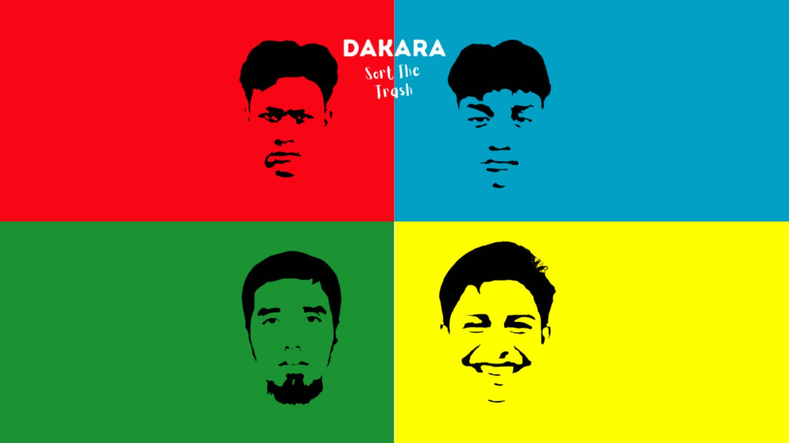
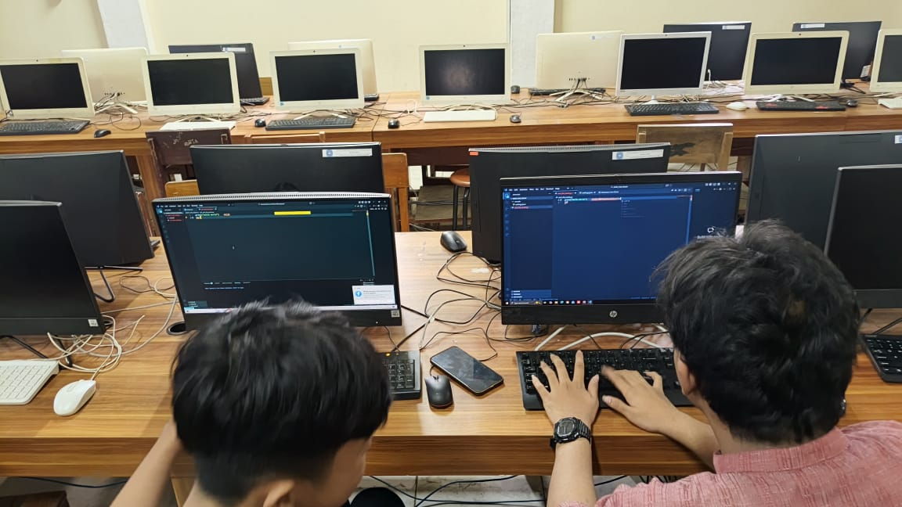
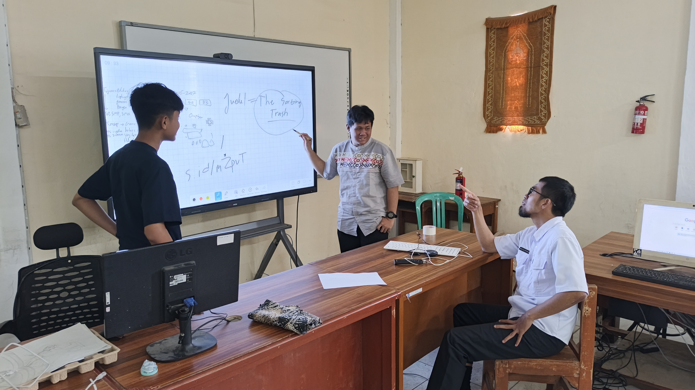
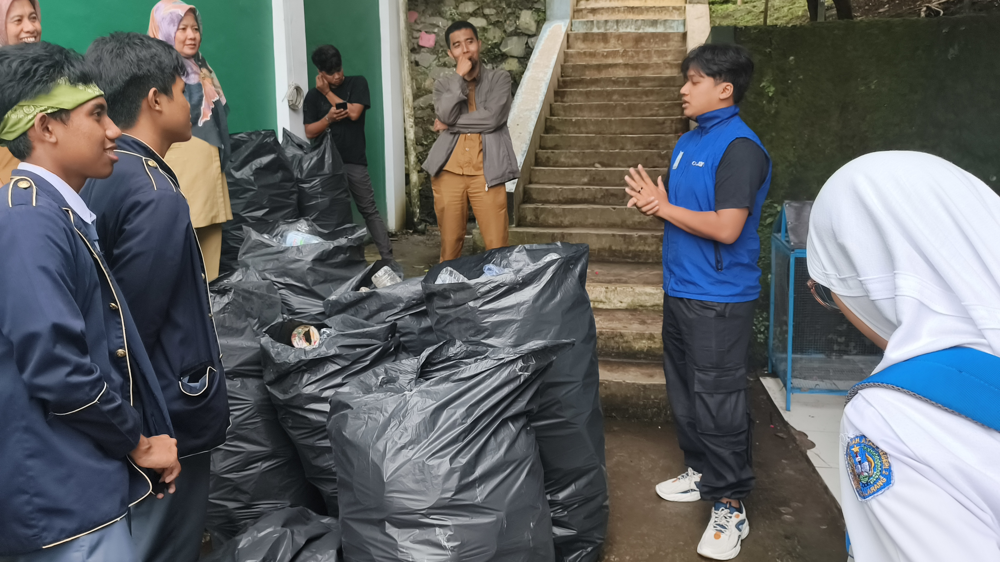
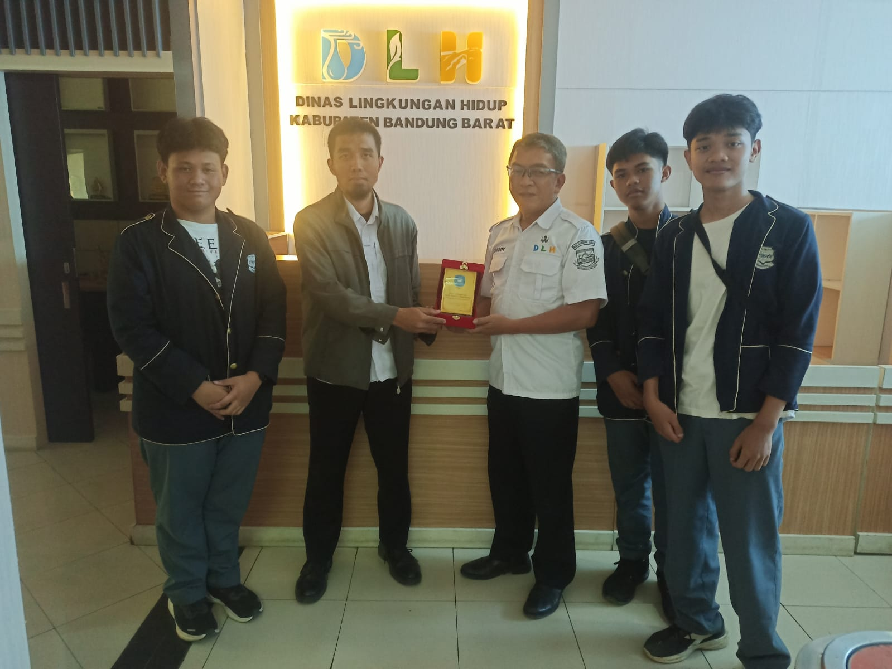

SORT THE TRASH
Game Edukasi Interaktif Pemilahan Sampah
Aplikasi petualangan edukatif seru untuk melatih kesadaran memilah sampah sejak bangku sekolah. Dikembangkan khusus oleh Tim DAKARA.
Profil Anggota Tim

Dasar Hukum & Permasalahan
Kondisi Lapangan (Masalah)
Masalah Makro (Lingkungan): Sampah di Kabupaten Bandung Barat makin menumpuk, kapasitas TPA sudah hampir penuh, dan banyak orang yang masih malas memilah sampah.
Masalah Mikro (Sekolah): Kita sebagai siswa masih sering bingung membedakan jenis sampah, cara belajar lingkungan di sekolah masih membosankan (cuma teori), dan guru sulit mengukur seberapa paham kita materi aslinya.
Dasar Hukum Kerja
- SK Bupati KBB No. 100.3.3.2/2025,
- SK Kepala SMAN 2 Padalarang No. 805/2025,
- UU No. 18 Tahun 2008,
- PP No. 81 Tahun 2012 & PP No. 27 Tahun 2020,
- Perpres No. 97 Tahun 2017.
Isu Strategis Pemicu Inovasi
Isu Global (SDGs)
Mendukung SDGs Tujuan 11, Tujuan 12, dan Tujuan 13.
Isu Nasional
Target Jakstranas buat kurangi sampah sampai 30% dan menangani sampah hingga 70%.
Isu Daerah
Bandung Barat darurat sampah! Perlu media edukasi digital yang seru buat anak muda zaman sekarang.
Metode & Panduan Bermain
Dulu
Cuma ceramah, seminar bikin ngantuk, bagi-bagi brosur kertas yang ujungnya dibuang.
Sekarang
Belajarnya lewat Game Web Interaktif, tinggal geser-geser (drag and drop), seru, langsung keluar skor.
Langkah Gampang:
Visi & Hasil
Keunggulan Spesifikasi
Berbasis web (tanpa instal), ringan di HP kentang, hemat kuota.
Tujuan & Manfaat
Biar siswa makin pintar pilah sampah, dukung program Adiwiyata SMAN 2 Padalarang, kurangi sampah KBB.
Dokumentasi
Dokumentasi pengerjaan proyek inovasi lingkungan:





